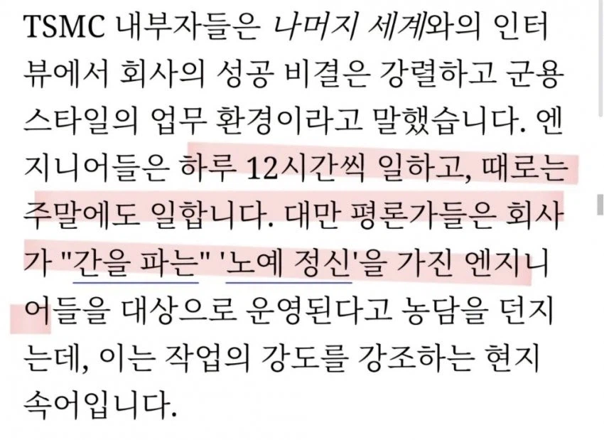
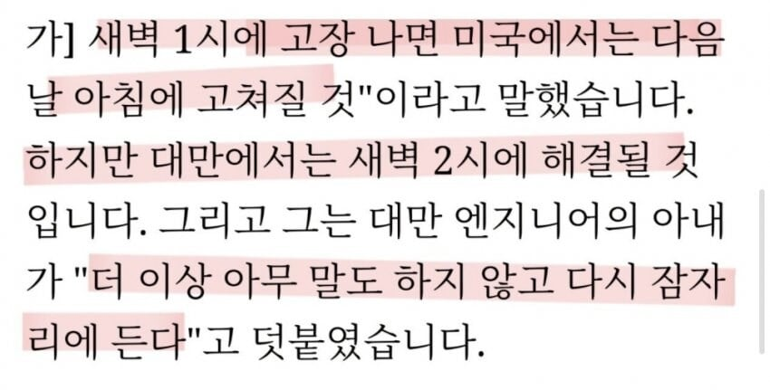

저긴 노동법이 없음...?


저긴 노동법이 없음...?
니말이 가독성이 좆좆이라 이해하는데 좀 어려웠다.
해당 스크린샷에서는 tsmc의 대만인이 저렇게 빡세게 일하면서도 돈을 그만큼 더 받으니까 자랑스럽게 말하고있는거고,
그걸보고 저긴 노동법이 없냐고 하는 개드립글쓴이에게,
나는 한국도 마찬가지로 빡세게 굴린다는 사실을 말하면서,
tsmc보다 많이 받니 어쩌니 하는 너에게>> 그만큼 물가가 저렴하다고 말해주고있는데
tsmc를 두둔하면서 그것보다 더받아야 한다고 말하고있는거 맞음?
분명 TSMC도 하이닉스처럼 영업비례 성과급 달라고 시위하려는 여론을 내가 봤는데 본문의 저 한놈이 지금의 임금수준으로도 만족스럽다 라고 TSMC의 전체 여론을 대변하는게 되는거임?
시발 하이닉스 다니는놈들은 자랑안하냐 지들 성과급 졷되게 많이 받는다고 블라에서 자랑하고 다니잖아. 똑같은거지
https://www.dogdrip.net/703597538 https://www.dogdrip.net/704048540
https://www.instagram.com/p/DONYU1dk29i/
https://www.hankookilbo.com/news/article/A2026080216300001150
그야 하이닉스는 신입사원부터 상여금 포함해서 연봉 1억이 넘으니 당연히 자랑하지
영업이익률 영업이익 금액 자체가 비슷한데 신입사원단계 연봉부터 차이가 2배쯤 나고
https://www.dogdrip.net/703662877 이런거까지 돌만큼 TSMC는 오히려 성과급을 줄이려 하니 결과적으로 같은 노동강도, 2배의 보수차이가 나니까 한국이 더 우월한거 맞잖아
그리고 난 이 작성자를 하도 트러블을 일으키길래 차단박아놨는데 본문에는 한국 이야기가 없는데 한국 이야기가 왜나옴? 딱히 작성자가 누구한테 댓글을 단 것도 그 누구가 작성자한테 댓글을 단것도 안보이는데?
저긴 노동법없음?? 이러면서 한국은 노동법 잘 지키듯이 얘기하잖아 의도가 뻔히 보이는 댓글인데
공장 건설 도중에 과로사 하신분 나와서 단속하니 52시간 초과로 일시키다 걸린 기록이 있는거 봐서 건설 단계에서 노동법 안지켜지는건 한국도 있다는게 니 말이 맞긴한데
tsmc가 얼마받든 알아서 하겠지..
난 그냥 한국이 더우월하다 말하는 개드립 글쓴이를 까고싶은거야
한국도 대만만큼 기술자 개처럼 일하면서 벌었고 지금도 그러고있는데
뭐가 잘났다고 그렇게 우월감을 드러내는지 모르겠어서
Tsmc는 대만 1위 대기업이고 경쟁사인 삼성 파운드리를 기준으로 봐야지, 한국이 훨씬 더 많이 받고 적게 일함. 물가 차이 고려하더라도 엄청 많은거. 즉 노동자 입장 우월한거 맞음 (삼파 올해 성과급만 책임급이 3억 넘음)
Tsmc는 오피스와 라인 모두 52시간 안지키고 삼파는 노동법 칼같이 지킴.
유령업무랑 국가에서 삼하에 맞춰서 노동시간 고무줄처럼 늘어나는건 노동법 안이라서 괜찮다?
그리고 하청업체 근무시간 안맞추는건 단순하청업체라 괜찮고?
니말대로면 시총도 낮은 미국 대기업들이 돈을더 많이 받으니까 한국은 깔보고 무시해도 되는거겠네? 존나 병신같은 논리 고마워~
본문에도 나와 있지민 설비 엔지니어가 좆같지.
자다가 전화받고 나가야 함.
자느라 전화 못 받으면 죽일 놈 됨.
술 마시는데 전화오면 좆같음.
가까운데 사는게 죄라, 일부러 멀리 이사가는 사람 속출.
미디어텍 다니다 우리회사온 친구있는데
힘들다고 울더라
대만이나 한국이나...
대만은 본업 자체가 많다기보다
상급자 눈치보는 업무가 많다고 들음
미디어텍이 연봉이 tsmc보다 더 높고 (라인 안들어가니) 일도 더 편한 편이긴 함 ㅋㅋ
의사보다 훨씬더번다더라
40대 아저씨들도 20대 예쁜애들 만나고 그런다더라
우리나라 의사마냥
그래서 거기도 신주과학단지 재활용업자라고 한국의 설거지론 비슷한게 있음 ㅋㅋ
시발 재활용업자 ㅋㅋㅋ 맵다 매워
미디어텍으로 이직하신분 보니깐 프로젝트 할땐 일주일 내내 밤새거나 새벽4시까지 일하는거 보고 돈이 아무리 좋아도 저렇게는 못하겠다 싶어서 이직 생각 접음.
대만인임?
미국이 다음날 아침에 고쳐진다는게 놀라운데
다음날 아침에 고쳐진다고? 미국에서?
나도 이 생각부터 들더라 ㅋㅋ
참고로 미국이랑 유럽이 엘리베이터 노조가 개씹꼴통 강성이라
한번 고장나면 고치는데 몇달 걸림
빨리 고치려면 인센 몇천 단위로 줘야 출장 앞당겨준다함ㅋㅋ
개좆같은 나라
시발 그정도면 맨 윗층 사는 사람이 배워서 스스로 고쳐놓을듯 ㅋㅋㅋㅋㅋㅋ
그럼 대만인을 수입해가면 되잖아?
우리나라도 노동법은 있어...
미국은 결국 저걸 로봇으로 해내려는 것 같더라. 충전 시간 빼고 거의 24시간 일할 엔지니어를 생각하는 거겠지...
일단 지능은 엔지니어에 거의 근접하는 것 같고. 물론, 암묵지나 학습 못 한 데이터를 어떻게 할거냐는 문제는 있겠지만.
삼성도 cs대응 4시간 안에 시작해야함
근데 몇년만 있으면 쉬지않는 로봇이랑 경쟁해야 할 듯
TSMC 직원들은 LG전자가 얼마를 받든 전혀 상관없음
니가 소말리아 이런애들보다 잘사니까 월급을 얼마를 받던 더 받을 생각도 하지마라 이러면 뭔 개소리냐고 할거잖아
똑같은거임 TSMC 매출하고 영업이익이 얼마인데 다른 한국대기업이 얼마를 받든 걔들한테는 전혀 상관없는 이야기임
걔들한테 반도체랑 전혀 상관없는 한국 대기업들은 막말로 베트남 빈패스트를 바라보는 현대차 직원 수준일걸